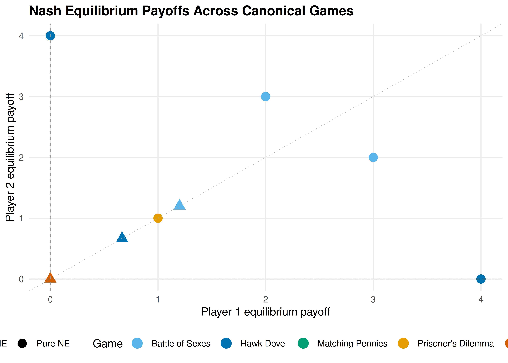

14 nashpy via reticulate
Accessing Python’s nashpy library from R via reticulate for Nash equilibrium computation — conceptual workflow, pure-R support enumeration as an equivalent alternative, and a comparative analysis across canonical games.
Learning objectives
- Describe the reticulate workflow for calling Python libraries from R and explain when cross-language interop is useful for game theory.
- Understand how nashpy’s support enumeration algorithm finds all Nash equilibria of a bimatrix game.
- Implement a pure-R support enumeration solver for general two-player games.
- Apply the solver to canonical games (Prisoner’s Dilemma, Battle of the Sexes, Matching Pennies) and compare equilibrium structures.
- Recognize the computational limits of support enumeration and when alternative algorithms are needed.
14.1 Motivation
R’s ecosystem for non-cooperative game theory is modest. The solvers we built in 4 handle 2x2 games, but many interesting strategic interactions are larger: a 3x3 Rock-Paper-Scissors variant, a 4x4 coordination game, or an asymmetric contest with different numbers of strategies per player. For these cases, we need general-purpose solvers.
Python’s nashpy library, developed by Vince Knight, provides exactly this. It implements support enumeration, vertex enumeration, and the Lemke–Howson algorithm for two-player games of arbitrary size. The reticulate package lets R users call Python seamlessly, passing matrices back and forth and collecting results as R objects.
However, depending on reticulate and a correctly configured Python environment introduces fragility. Python version conflicts, virtual environment management, and package installation issues can derail a workflow. For reproducible research and teaching, a pure-R fallback is valuable. This chapter describes both approaches: we show what the reticulate + nashpy workflow looks like so readers can adopt it when Python solvers are genuinely needed, and we implement a pure-R support enumeration solver that produces the same results. We then apply it to several canonical games and visualize how equilibrium structure varies across different strategic settings.
14.2 Theory
14.2.1 The reticulate bridge
The reticulate package converts R objects to Python objects and vice versa. The typical workflow for calling nashpy from R has four steps.
Step 1: Configure the Python environment.
library(reticulate)
install_miniconda() # one-time setup
py_install("nashpy") # install nashpy into the conda environmentThe install_miniconda() call downloads and installs a minimal Python distribution. The py_install() call installs nashpy (and its dependency NumPy) into that environment. This needs to happen only once per machine.
Step 2: Import nashpy and create a game.
nashpy <- import("nashpy")
A <- matrix(c(3, 0, 0, 2), nrow = 2, byrow = TRUE)
B <- matrix(c(2, 0, 0, 3), nrow = 2, byrow = TRUE)
game <- nashpy$Game(A, B)The import() call loads the Python module into R’s session. R matrices are automatically converted to NumPy arrays when passed to Python functions.
Step 3: Compute equilibria.
equilibria <- iterate(game$support_enumeration())The support_enumeration() method returns a Python generator. Reticulate’s iterate() converts it to an R list of equilibria, where each equilibrium is a pair of probability vectors.
Step 4: Collect results.
for (eq in equilibria) {
cat("Player 1:", eq[[1]], "\n")
cat("Player 2:", eq[[2]], "\n\n")
}When to use nashpy via reticulate
The Python bridge is most valuable when you need algorithms beyond simple support enumeration — vertex enumeration for degenerate games, the Lemke–Howson algorithm for games larger than 2x2, or integration with other Python scientific computing tools. For standard 2x2 analysis, the pure-R approach is simpler and has no external dependencies.
14.2.2 Support enumeration
The support of a mixed strategy \(\sigma_i\) is the set of pure strategies played with positive probability:
\[\begin{equation} \text{supp}(\sigma_i) = \{a_i \in A_i : \sigma_i(a_i) > 0\} \tag{14.1} \end{equation}\]
The support enumeration algorithm exploits a key property of Nash equilibrium: at a mixed-strategy NE, every pure strategy in a player’s support must yield the same expected payoff. If one action in the support gave a strictly higher payoff, the player could shift probability toward it, contradicting the equilibrium condition.
For a two-player game with payoff matrices \(A\) (row player) and \(B\) (column player), the algorithm proceeds:
Enumerate support pairs. For each possible support \(S_1 \subseteq \{1, \ldots, m\}\) for the row player and \(S_2 \subseteq \{1, \ldots, n\}\) for the column player, with \(|S_1| = |S_2| = k\), consider the candidate.
Solve the indifference conditions. The column player’s mixture \(q\) over \(S_2\) must make the row player indifferent across \(S_1\): \[\begin{equation} (A q)_i = (A q)_j \quad \forall\, i, j \in S_1 \tag{14.2} \end{equation}\] Similarly, the row player’s mixture \(p\) over \(S_1\) must make the column player indifferent across \(S_2\).
Check feasibility. All probabilities must be non-negative and sum to 1. Actions outside the support must not be profitable deviations.
Definition: Non-degenerate game
A two-player game is non-degenerate if no mixed strategy has more best responses than the size of its support. For non-degenerate games, support enumeration finds all Nash equilibria.
14.2.3 Complexity considerations
Support enumeration must consider \(\sum_{k=1}^{\min(m,n)} \binom{m}{k}\binom{n}{k}\) support pairs. For a \(3 \times 3\) game this is 13 pairs — manageable. For a \(10 \times 10\) game, the count exceeds 184,000. The algorithm is exponential in the number of strategies, reflecting the PPAD-completeness of Nash equilibrium computation (Shoham & Leyton-Brown, 2009). For games up to roughly \(8 \times 8\), support enumeration is practical; beyond that, the Lemke–Howson algorithm or heuristics like fictitious play are preferable (see 15).
14.3 Implementation in R
We implement support enumeration in pure R, handling games of arbitrary size. This mirrors nashpy’s core algorithm but runs natively without Python.
14.3.1 General support enumeration solver
support_enumeration_general <- function(A, B, tol = 1e-10) {
m <- nrow(A) # row player strategies
n <- ncol(A) # column player strategies
equilibria <- list()
# Enumerate support sizes k from 1 to min(m, n)
for (k in seq_len(min(m, n))) {
row_supports <- combn(m, k, simplify = FALSE)
col_supports <- combn(n, k, simplify = FALSE)
for (S1 in row_supports) {
for (S2 in col_supports) {
eq <- try_support_pair(A, B, S1, S2, tol)
if (!is.null(eq)) {
equilibria <- c(equilibria, list(eq))
}
}
}
}
equilibria
}
try_support_pair <- function(A, B, S1, S2, tol = 1e-10) {
k <- length(S1)
A_sub <- A[S1, S2, drop = FALSE]
B_sub <- B[S1, S2, drop = FALSE]
# Solve for q: column player mixture making row player indifferent
q <- solve_indifference(A_sub, tol)
if (is.null(q)) return(NULL)
# Solve for p: row player mixture making column player indifferent
p <- solve_indifference(t(B_sub), tol)
if (is.null(p)) return(NULL)
# Build full probability vectors
p_full <- rep(0, nrow(A))
q_full <- rep(0, ncol(A))
p_full[S1] <- p
q_full[S2] <- q
# Check: no outside action should be a profitable deviation
row_payoffs <- as.numeric(A %*% q_full)
eq_payoff_row <- row_payoffs[S1[1]]
if (any(row_payoffs > eq_payoff_row + tol)) return(NULL)
col_payoffs <- as.numeric(t(B) %*% p_full)
eq_payoff_col <- col_payoffs[S2[1]]
if (any(col_payoffs > eq_payoff_col + tol)) return(NULL)
list(p = p_full, q = q_full,
payoff_1 = eq_payoff_row, payoff_2 = eq_payoff_col)
}
solve_indifference <- function(M, tol = 1e-10) {
k <- nrow(M)
if (k == 1) return(1) # singleton support
# System: (M[1,] - M[i,]) * q = 0 for i=2..k, plus sum(q) = 1
Amat <- matrix(0, nrow = k, ncol = k)
bvec <- rep(0, k)
for (i in 2:k) {
Amat[i - 1, ] <- M[1, ] - M[i, ]
}
Amat[k, ] <- rep(1, k)
bvec[k] <- 1
result <- tryCatch(solve(Amat, bvec), error = function(e) NULL)
if (is.null(result)) return(NULL)
if (any(result < -tol)) return(NULL)
result <- pmax(result, 0)
result / sum(result)
}14.3.2 Testing on the three canonical 2x2 games
# --- Prisoner's Dilemma ---
A_pd <- matrix(c(3, 0, 5, 1), nrow = 2, byrow = TRUE,
dimnames = list(c("C", "D"), c("C", "D")))
B_pd <- matrix(c(3, 5, 0, 1), nrow = 2, byrow = TRUE,
dimnames = list(c("C", "D"), c("C", "D")))
cat("--- Prisoner's Dilemma ---\n")#> --- Prisoner's Dilemma ---
cat("Player 1 payoffs:\n")#> Player 1 payoffs:
A_pd#> C D
#> C 3 0
#> D 5 1
cat("\nPlayer 2 payoffs:\n")#>
#> Player 2 payoffs:
B_pd#> C D
#> C 3 5
#> D 0 1#>
#> Equilibria found: 1
for (eq in pd_eq) {
cat(" p =", round(eq$p, 3), " q =", round(eq$q, 3),
" payoffs = (", round(eq$payoff_1, 2), ",",
round(eq$payoff_2, 2), ")\n")
}#> p = 0 1 q = 0 1 payoffs = ( 1 , 1 )The Prisoner’s Dilemma has a unique NE at (D, D) with payoffs (1, 1). Defection is a dominant strategy, so no mixed equilibrium exists.
# --- Battle of the Sexes ---
A_bos <- matrix(c(3, 0, 0, 2), nrow = 2, byrow = TRUE,
dimnames = list(c("Opera", "Football"),
c("Opera", "Football")))
B_bos <- matrix(c(2, 0, 0, 3), nrow = 2, byrow = TRUE,
dimnames = list(c("Opera", "Football"),
c("Opera", "Football")))
cat("--- Battle of the Sexes ---\n")#> --- Battle of the Sexes ---#> Equilibria found: 3
for (eq in bos_eq) {
is_pure <- sum(eq$p > 1e-10) == 1 && sum(eq$q > 1e-10) == 1
label <- if (is_pure) "Pure" else "Mixed"
cat(glue(" [{label}] p = ({paste(round(eq$p, 3), collapse=', ')})"),
glue("q = ({paste(round(eq$q, 3), collapse=', ')})"),
glue("payoffs = ({round(eq$payoff_1, 2)}, {round(eq$payoff_2, 2)})"),
"\n")
}#> [Pure] p = (1, 0) q = (1, 0) payoffs = (3, 2)
#> [Pure] p = (0, 1) q = (0, 1) payoffs = (2, 3)
#> [Mixed] p = (0.6, 0.4) q = (0.4, 0.6) payoffs = (1.2, 1.2)Battle of the Sexes has three NE: two pure equilibria where players coordinate (at (Opera, Opera) and (Football, Football)) and one mixed equilibrium. The mixed NE yields lower payoffs than either pure NE because randomization creates miscoordination risk.
# --- Matching Pennies ---
A_mp <- matrix(c(1, -1, -1, 1), nrow = 2, byrow = TRUE,
dimnames = list(c("Heads", "Tails"),
c("Heads", "Tails")))
B_mp <- matrix(c(-1, 1, 1, -1), nrow = 2, byrow = TRUE,
dimnames = list(c("Heads", "Tails"),
c("Heads", "Tails")))
cat("--- Matching Pennies ---\n")#> --- Matching Pennies ---#> Equilibria found: 1
for (eq in mp_eq) {
cat(" p =", round(eq$p, 3), " q =", round(eq$q, 3),
" payoffs = (", round(eq$payoff_1, 2), ",",
round(eq$payoff_2, 2), ")\n")
}#> p = 0.5 0.5 q = 0.5 0.5 payoffs = ( 0 , 0 )Matching Pennies is a zero-sum game with no pure NE. The unique equilibrium requires both players to randomize 50-50, yielding expected payoffs of (0, 0). Any deviation from uniform mixing would be exploited by the opponent.
14.3.3 Cross-validation with the 2x2 solver
# Verify that the general solver matches the 2x2 solver from solvers.R
cat("Cross-validation against R/solvers.R:\n\n")#> Cross-validation against R/solvers.R:
games_2x2 <- list(
"Prisoner's Dilemma" = list(A = A_pd, B = B_pd),
"Battle of the Sexes" = list(A = A_bos, B = B_bos),
"Matching Pennies" = list(A = A_mp, B = B_mp)
)
for (name in names(games_2x2)) {
g <- games_2x2[[name]]
eq_basic <- support_enumeration(g$A, g$B)
eq_gen <- support_enumeration_general(g$A, g$B)
n_basic <- length(eq_basic$pure) + (!is.null(eq_basic$mixed))
n_gen <- length(eq_gen)
cat(glue("{name}: basic solver = {n_basic} NE, general solver = {n_gen} NE"),
"\n")
}#> Prisoner's Dilemma: basic solver = 1 NE, general solver = 1 NE
#> Battle of the Sexes: basic solver = 3 NE, general solver = 3 NE
#> Matching Pennies: basic solver = 1 NE, general solver = 1 NE14.4 Worked example
We apply the general solver to the Hawk-Dove game (also known as Chicken), then extend it to a 3x3 variant that the 2x2 solver from R/solvers.R cannot handle.
14.4.1 The 2x2 Hawk-Dove game
Two animals contest a resource worth \(V = 4\). Each plays Hawk (aggressive) or Dove (passive). If both play Hawk, they fight and each receives \((V - C)/2\) where the cost of fighting is \(C = 6\). If one plays Hawk and the other Dove, the Hawk takes the full resource. If both play Dove, they share equally.
V <- 4; C <- 6
A_hd <- matrix(c((V-C)/2, V, 0, V/2), nrow = 2, byrow = TRUE,
dimnames = list(c("Hawk", "Dove"), c("Hawk", "Dove")))
B_hd <- t(A_hd) # symmetric game
dimnames(B_hd) <- dimnames(A_hd)
cat("Hawk-Dove Game (V=4, C=6):\n")#> Hawk-Dove Game (V=4, C=6):
cat("Player 1 payoffs:\n")#> Player 1 payoffs:
A_hd#> Hawk Dove
#> Hawk -1 4
#> Dove 0 2
cat("\nPlayer 2 payoffs:\n")#>
#> Player 2 payoffs:
B_hd#> Hawk Dove
#> Hawk -1 0
#> Dove 4 2#>
#> Equilibria found: 3
for (eq in hd_eq) {
is_pure <- sum(eq$p > 1e-10) == 1 && sum(eq$q > 1e-10) == 1
label <- if (is_pure) "Pure" else "Mixed"
cat(glue(" [{label}] p(Hawk) = {round(eq$p[1], 4)}, ",
"q(Hawk) = {round(eq$q[1], 4)}, ",
"payoffs = ({round(eq$payoff_1, 3)}, {round(eq$payoff_2, 3)})"),
"\n")
}#> [Pure] p(Hawk) = 1, q(Hawk) = 0, payoffs = (4, 0)
#> [Pure] p(Hawk) = 0, q(Hawk) = 1, payoffs = (0, 4)
#> [Mixed] p(Hawk) = 0.6667, q(Hawk) = 0.6667, payoffs = (0.667, 0.667)The Hawk-Dove game has two pure NE (one plays Hawk, the other Dove) and one mixed NE where each player plays Hawk with probability \(V/C = 2/3\). The mixed equilibrium probability matches the evolutionary stable strategy from ??.
14.4.2 A 3x3 extension: Rock-Paper-Scissors
# Standard Rock-Paper-Scissors (zero-sum)
A_rps <- matrix(c(0, -1, 1, 1, 0, -1, -1, 1, 0),
nrow = 3, byrow = TRUE,
dimnames = list(c("Rock", "Paper", "Scissors"),
c("Rock", "Paper", "Scissors")))
B_rps <- -A_rps
dimnames(B_rps) <- dimnames(A_rps)
cat("Rock-Paper-Scissors:\n")#> Rock-Paper-Scissors:
A_rps#> Rock Paper Scissors
#> Rock 0 -1 1
#> Paper 1 0 -1
#> Scissors -1 1 0
rps_eq <- support_enumeration_general(A_rps, B_rps)
cat("\nEquilibria found:", length(rps_eq), "\n")#>
#> Equilibria found: 1
for (eq in rps_eq) {
cat(" p =", round(eq$p, 4), "\n")
cat(" q =", round(eq$q, 4), "\n")
cat(" payoffs = (", round(eq$payoff_1, 4), ",",
round(eq$payoff_2, 4), ")\n")
}#> p = 0.333 0.333 0.333
#> q = 0.333 0.333 0.333
#> payoffs = ( 0 , 0 )The unique NE of standard RPS is the uniform mixture \((1/3, 1/3, 1/3)\) for both players, with expected payoffs of zero. This is a case where the 2x2 solver from R/solvers.R would fail entirely — the general solver handles it correctly.
14.4.3 Comparative visualization
# Collect all equilibria across games
all_games <- list(
"Prisoner's Dilemma" = list(A = A_pd, B = B_pd),
"Battle of Sexes" = list(A = A_bos, B = B_bos),
"Matching Pennies" = list(A = A_mp, B = B_mp),
"Hawk-Dove" = list(A = A_hd, B = B_hd),
"Rock-Paper-Scissors" = list(A = A_rps, B = B_rps)
)
eq_rows <- list()
for (game_name in names(all_games)) {
g <- all_games[[game_name]]
eqs <- support_enumeration_general(g$A, g$B)
for (eq in eqs) {
is_pure <- sum(eq$p > 1e-10) == 1 && sum(eq$q > 1e-10) == 1
eq_rows <- c(eq_rows, list(tibble(
game = game_name,
type = if (is_pure) "Pure NE" else "Mixed NE",
payoff_1 = eq$payoff_1,
payoff_2 = eq$payoff_2
)))
}
}
eq_df <- bind_rows(eq_rows)
p_compare <- ggplot(eq_df, aes(x = payoff_1, y = payoff_2,
colour = game, shape = type)) +
geom_point(size = 3.5, stroke = 1.2) +
scale_colour_manual(
values = c(
"Prisoner's Dilemma" = okabe_ito[1],
"Battle of Sexes" = okabe_ito[2],
"Matching Pennies" = okabe_ito[3],
"Hawk-Dove" = okabe_ito[5],
"Rock-Paper-Scissors" = okabe_ito[6]
),
name = "Game"
) +
scale_shape_manual(values = c("Pure NE" = 16, "Mixed NE" = 17),
name = "Type") +
geom_hline(yintercept = 0, linetype = "dashed", colour = "grey60",
linewidth = 0.3) +
geom_vline(xintercept = 0, linetype = "dashed", colour = "grey60",
linewidth = 0.3) +
geom_abline(intercept = 0, slope = 1, linetype = "dotted",
colour = "grey70", linewidth = 0.3) +
scale_x_continuous(name = "Player 1 equilibrium payoff") +
scale_y_continuous(name = "Player 2 equilibrium payoff") +
labs(title = "Nash Equilibrium Payoffs Across Canonical Games") +
theme_publication()
p_compare
Figure 14.1: Nash equilibrium payoffs across five canonical games. Each point represents one equilibrium, with colour distinguishing games and shape distinguishing pure from mixed equilibria. Mixed equilibria consistently yield lower payoffs than pure equilibria within the same game, illustrating the cost of miscoordination under randomization.
save_pub_fig(p_compare, "equilibria-comparison", width = 7, height = 5)Several patterns emerge from 14.1:
- Dominance yields efficiency loss. The Prisoner’s Dilemma equilibrium at (1, 1) is Pareto-dominated by mutual cooperation at (3, 3), but dominant-strategy logic drives both players to defect.
- Coordination creates multiplicity. Battle of the Sexes has two efficient pure NE on opposite sides of the 45-degree line and one inefficient mixed NE near the origin.
- Zero-sum games force mixing. Both Matching Pennies and Rock-Paper-Scissors have unique mixed equilibria at (0, 0), reflecting the impossibility of exploiting a fully randomizing opponent.
- Hawk-Dove straddles both patterns. Its two pure NE are asymmetric (one player dominates), while the mixed NE at approximately (0.67, 0.67) is symmetric but inferior.
14.5 Extensions
The support enumeration solver and the reticulate pattern described here connect to several directions explored elsewhere in the book:
- Nash equilibrium (4) provides the theoretical foundation. Nash’s existence theorem guarantees that support enumeration will always find at least one equilibrium for any finite game.
- Mixed strategies (5) develops the indifference principle that the algorithm operationalizes.
- Custom solvers (15) extends the toolkit with the Lemke–Howson algorithm and fictitious play, which are more efficient for larger games.
- The gtree package (13) handles extensive-form games; converting an extensive form to normal form and then applying support enumeration is a standard workflow.
- Evolutionary stable strategies (??) gives a population-dynamics interpretation of the Hawk-Dove mixed equilibrium.
The reticulate pattern generalizes beyond nashpy. Any Python game theory library — Gambit’s Python bindings, the Axelrod library for tournament simulations, or custom solvers built with NumPy — can be called from R using the same import() and method-call pattern.
Exercises
Stag Hunt equilibria. Apply
support_enumeration_general()to the Stag Hunt game with payoffs: both hunt Stag yields (4, 4), both hunt Hare yields (3, 3), one hunts Stag while the other hunts Hare yields (0, 3) for the Stag hunter. Find all Nash equilibria. Compute the expected payoff at the mixed NE and explain why it is Pareto-dominated by (Stag, Stag).Asymmetric Matching Pennies. Modify Matching Pennies so that Player 1 receives 2 (instead of 1) when both choose Heads, with all other payoffs unchanged. Use the general solver to find the new mixed NE. How do the equilibrium mixing probabilities change? Provide an intuitive explanation for the direction of the shift.
Three-strategy asymmetric game. Consider a game where Player 1 has strategies \(\{T, M, B\}\) and Player 2 has strategies \(\{L, R\}\), with \(A = \begin{pmatrix} 3 & 0 \\ 0 & 3 \\ 1 & 1 \end{pmatrix}\) and \(B = \begin{pmatrix} 3 & 0 \\ 0 & 3 \\ 2 & 2 \end{pmatrix}\). Find all NE. Explain why the pure-R
support_enumeration()fromR/solvers.Rcannot handle this game butsupport_enumeration_general()can. Why does no equilibrium assign positive probability to Player 1’s strategy \(B\)?
Solutions appear in D.